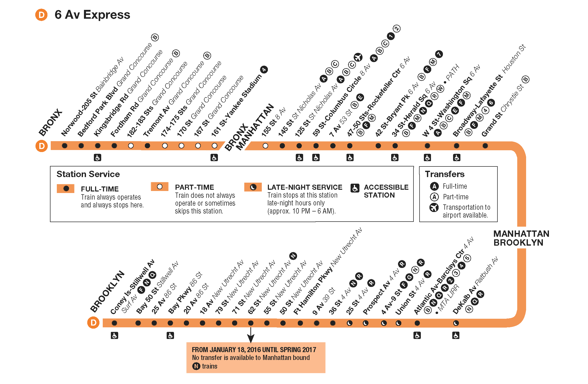
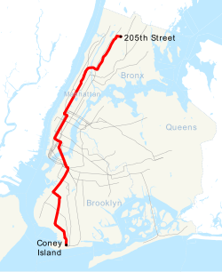

I am a senior at NEST+m
I've been taking 2 hour train rides since 6th grade
Misaki T
Mr. Wells, Mr.Basley
English Language and Composition
21 October 2024
I live on Fordham Road. A place my mother deemed “good” years ago, I was welcomed by its promise of its nearby shopping center and the “opportunities”—“more opportunities,” as she envisioned. Yet, now, that promise feels hollow. The streets are made up of makeshift stalls lined up in an array from selling everything from counterfeit designer bags to Crocs, and AirPods, that behind glass doors, would go for hundreds. The faces I see look tired, worn down by the grind of living paycheck to paycheck. You see, we are New Yorkers; we hustle through life. We don’t hustle for a future but for the present— just to make ends meet. Maybe it’s the inconspicuous hope that keeps us going, because amidst our poverty, the shining beacon of light lies here: Fordham University, the grand institution with its green lawns and towering fences that stretch beyond my peripherals. In contrast to our littered sidewalks, their grass is trimmed to perfection. From our dilapidated buildings to their pristine dorms, from our rusted doors to their polished steel fences—it’s a clear divide. We can’t even breathe their air. They exist in their own bubbles that no one from the outside can pop. I can only observe them from the outside. They carry themselves with an aura that feels too good for these streets; they were never one of us and never tried to be.
So where did they come from? Obviously, they’re outsiders. That's why we have the Metro North, a long railroad connecting other states to ours. Without them, there’d be no reason to come here. They’re the reasons why our neighborhood has been gentrified, with local shops replaced by Chick-fil-A, Starbucks, and Target—mostly for them. The Metro North stands out, while our MTA trains—especially the D and B trains that most Fordham people use—are neglected. Go down the stairs and you’re met with dim lighting, walls stained with the staggering smell of feces and urine that no one ever gets used to. This time, the workers hurry past, but the wanderers—the homeless—stay, especially on the coldest nights. They walk by us in ragged clothes, their odor lingering as they hold out paper cups, asking for the city’s help. But no matter the pleading, the city pretends not to see, and leaves them on read.
The D train carries us through, and we, the passengers, simply rely on its rhythm to transport us from station to station. The babies begin to cry in their carriages as the whole train rocks. The homeless begin to stampede, and we tilt our heads away and plug our AirPods. We rock by as the trains beat and sway following the streets as they countdown: 188th, 161st, 125th, 59th—then, in an instant, the wanderers are gone, the babies stop crying, and the people around suddenly look so different. As we pass through streets with only double digits, I see them—people in luxury suits, all tailored and proper. An aura of elegance follows them as they stride onto the train, looking brighter, happier, more vibrant than the locals of Fordham. Even the once raggedy D train starts to look better. They remind me of the Fordham students' just a little older and perhaps even brighter. These are the doctors, the lawyers, the businessmen—the ones who are respected in today’s world.
My commute to school is an hour long, all the way down to the Lower East Side of Manhattan. It’s been like this for years, and each morning brings a new mix of people, a changing flow of life. I see people with skin lighter than caramel, dressed in fancy clothes, and others who don’t have much at all but a smile on their faces. Walking through Soho, I pass boutiques, Macy’s, Chanel—luxury brands I never knew existed as a naive girl. This is where the sun shines brightest, where the people find their light. It’s the beauty of New York, a heaven on earth and an inspiration for all. I get to observe the many wonderful people and discover new places that thrill. Maybe that’s why we stay, why our hopes are anchored onto these streets. Just because one block struggles, down the road there’s a light like Fordham University or the Botanical Garden or the Bronx Zoo. This city holds endless possibilities—whether we’re being realistic or a bit delusional, this vision of happiness keeps our hearts beating. In the end. the New Yorker’s vision of happiness becomes our purpose.
Here is a map of the D train line to help visualize my two hour commute :)

